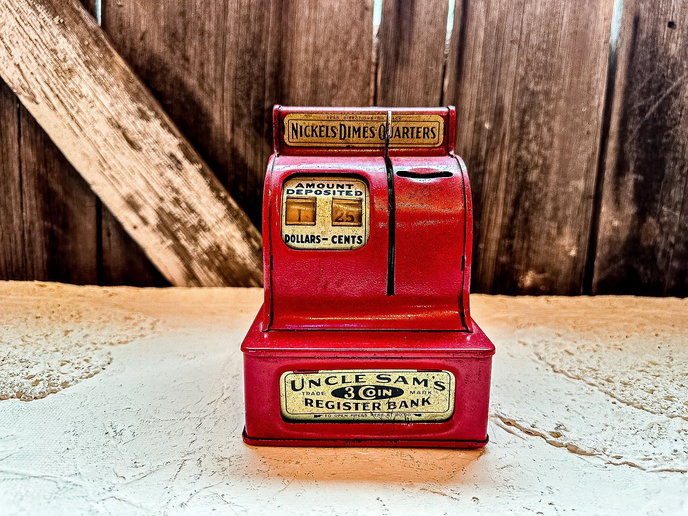
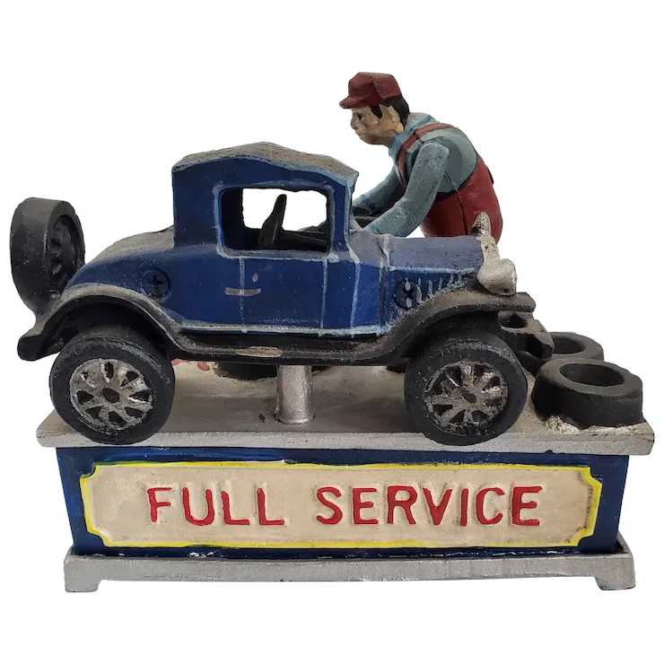
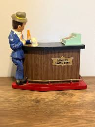

The "3 coin register bank" is an antique toy bank, commonly known as the Uncle Sam 3-Coin Register Bank, that was made of steel with a mechanical cash register design. It was designed to accept dimes, nickels, and quarters, and its built-in counter would prevent the bank from being opened until a total of $10 was deposited. These banks were first made by the Durable Toy & Novelty Company in the early 1900s and have been produced by various companies since.
Read More!

For those seeking a creative way to save change, a unique and nostalgic product has gained popularity—a coin bank modeled after a vintage gas pump. These items, which evoke the aesthetic of mid-20th-century American gas stations, are sold by various brands on online marketplaces and in novelty stores.The vintage gas pump coin bank is a low-tech alternative for those who prefer a physical and decorative way to store and save their money.
Purchase!

A drinkers saving bank refers to novelty, often battery-operated, mechanical banks from the mid-20th century that feature a figure who "drinks" coins and drops them into the bank.
Purchase!